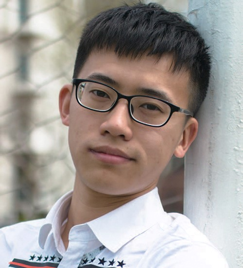
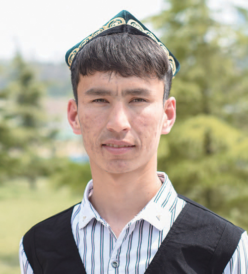
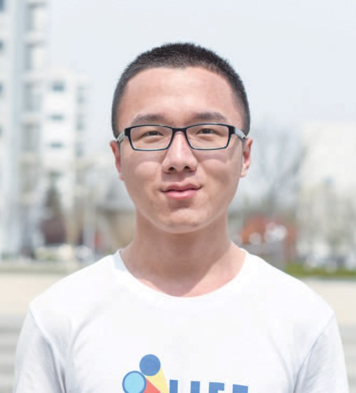
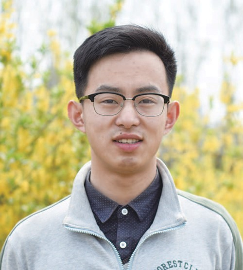
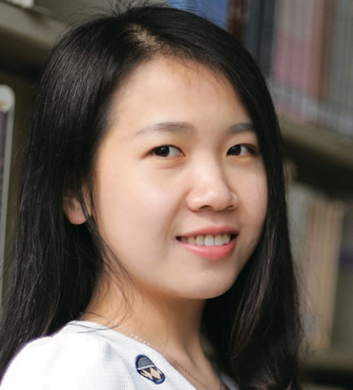
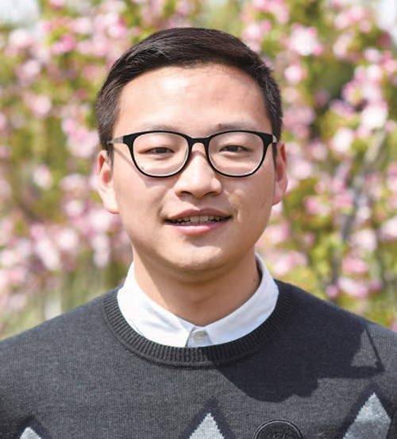
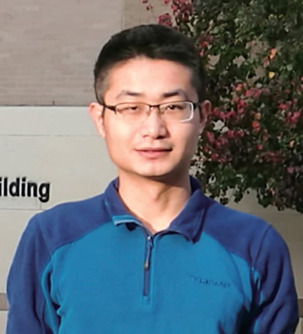
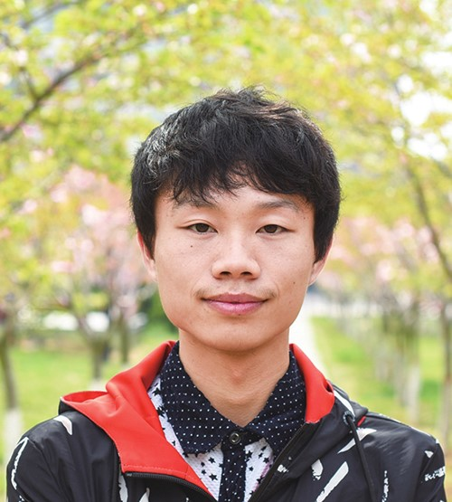
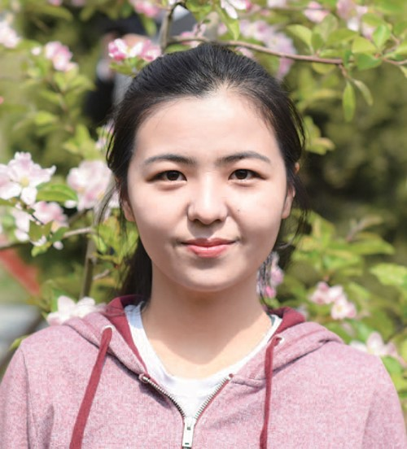

十大学生标兵
深稽博考 创意青春——2016-2017年度十大学生标兵程琨

程琨
共青团员，经济管理学院2015级本科生
现任学院学生会主席、学院2014级第一党支部副书记。专业排名前10%，曾获王涛英才奖学金、学习优秀奖学金、组织能力奖学金、科技创新奖学金等。带队参加山东省泰德商业案例分析大赛获全省第一，曾获青岛市U7模拟经济峰会获一等奖，创青春山东省大学生创新创业大赛铜奖、山东省“互联网+”创新创业大赛三等奖等。在校期间，参与课题研究、论文撰写修改10余次，大创项目结题1项，在研1项，挑战杯项目在研1项。积极参加社会实践，调研事迹被累计报道60余次，带领“探路者”实践队获评山东省优秀实践队、全国百强实践队。获评山东省高等学校优秀学生、山东省暑期社会实践优秀学生、优秀学生干部等各级荣誉奖励共30余项。
青春寄语：心中自有一番天地，何惧前路风雨征途。
积极乐观 自强不息——2016-2017年度十大学生标兵卡哈尔·热扎克

卡哈尔·热扎克
中共党员，经济管理学院2014级本科生
现任国际经济与贸易专业1501班文体委员、学院排球队队长。专业排名第一，曾获国家奖学金，连续三学期获得“少数民族学习优秀一等奖学金”，获全国大学生英语竞赛二等奖、线性代数竞赛二等奖等。入学以来，所有必修课成绩均在90分以上，同时已帮助至少15名院内外学习困难的少数民族同学补习英语、高等数学、计算机等课程，提高学习成绩，带领班级获先进班集体。参与青岛大学生“BEST计划”大创项目、“学创杯”大学生创新创业大赛、“人民币国际化对中小企业的影响”研究项目。积极参加运动会、青年健身节、元旦晚会等各类第二课堂活动。获评校级优秀学生、青年健身节优秀运动员、少数民族演讲比赛一等奖等各级荣誉奖励10余项。
青春寄语：人生只有在拼搏中才能彰显它的价值！
创新驱动 乐于挑战——2016-2017年度十大学生标兵刘彬彬

刘彬彬
预备党员，理学院2014级本科生
现任理学院数学专业1401班班长。曾获国家奖学金，获全国大学生数学建模竞赛全国一等奖、三等奖、省三等奖，全国大学生数学竞赛全国二等奖、省一等奖。在校期间，师从李明副教授，以第一作者身份发表SCI三区论文1篇，2017年6月将赴德国马普所（Max-Planck-Institute）进行学术交流。作为负责人主持国家级大创项目《量子非局域性检测及度量》。担任校青协通讯员，在青岛市环保微视频比赛中获优秀奖，累计志愿服务超过100小时，获得“三星级志愿者”称号。获评山东省优秀学生、BEST计划“优秀志愿者”等各级荣誉奖励共10余项。
青春寄语：既然选择了远方，便只顾风雨兼程。追求卓越，惟真惟实，生活，就是要不停地奔跑。
追梦赤子 砥志研思——2016-2017年度十大学生标兵路子奇

路子奇
中共党员，计算机与通信工程学院2014级本科生
现任学院团委书记助理、计算机1602班班主任助理、班级班长。专业综合测评3/117，曾获中国石油奖学金、校学习优秀一等奖学金、组织能力奖学金、科技创新奖学金等。担任班长期间，亲自走上讲台成立“子奇小课堂”，为班级同学讲解和辅导高数、大物等重点难点科目，制定复习计划30余项，授课累计40余学时，整理复习资料400余页。带领班级获评先进班集体、优良学风班、先进团支部、红旗团支部、活力团支部候选集体等荣誉称号。在校期间，负责2项大学生自主创新项目，拥有3项国家专利授权，申请2项软件著作权，在中国计算机学会核心期刊发表论文1篇。曾获山东省齐鲁软件设计大赛二等奖
青春寄语：年轻的我们要有梦想，脚踏实地，好好读书，才能梦想成真
以梦为马 为爱前行——2016-2017年度十大学生标兵宋宜磊

宋宜磊
预备党员，石油工程学院2014级本科生
现任学院学生会副主席、学院青协主席。曾获中国石油奖学金、国家励志奖学金、创新创业卓越之星奖学金等。在校期间，参与自主创新课题2项，横向项目1项，负责挑战杯项目1项，负责大创项目1项。已在JML和CSA发表SCI三区论文2篇，第三篇论文已投往MCP杂志（SCI二区），SPE竞赛论文也已经完稿。除此之外，负责省级社会实践项目2项，校级社会实践10余项。参与志愿服务活动50余次，募集资金23000余元，志愿服务时长超1000小时。获山东省高校优秀学生、山东省“三下乡”社会实践优秀学生、校十大科技标兵、“美丽心灵阳光石大”十大人物、“王涛英才奖学金”提名奖、院十佳学子等各级荣誉奖励30余项。
青春寄语：若生活本无芬芳，我愿簪花而行，一路走来，一路盛开
不忘初心 勇于探索——2016-2017年度十大学生标兵吴非

吴非
中共党员，化学工程学院2015级硕士研究生
现任化学工程学院兼职辅导员、校报记者，曾任校学生会主席、省学联委员、市学联副主席。专业成绩排名1/21，参与国家级基金项目等3项，发表学术论文3篇，申请专利5项。在校期间，获中国研究生石油装备创新设计大赛一等奖、全国大学生过程装备实践与创新大赛二等奖，获评山东省社会实践优秀个人、山东省优秀学生、中国石油大学校长奖、十佳团员标兵、思美之星、思美节优秀指导教师等各级荣誉奖励20余项，各类奖学金10余项。一年来在校报发表评论8篇，荣获新闻宣传先进个人。代表学校参加团中央第七期大学生骨干培训，作为全国代表参加全国青联内地大学生赴港交流实践，并在2013年10月作为学生代表在建校60周年庆祝大会上发言
青春寄语：立足当下，勇往直前，努力奋斗才能青春无悔
严以律己 精益求精——2016-2017年度十大学生标兵杨敬

杨敬
中共党员，机电工程学院2015级硕士研究生
现任机电学院兼职辅导员，曾任学院研究生学生会主席、学工处大学生资助中心服务站站长、学院辅导员助理。专业成绩排名第一，2015年保送我校学术型研究生。曾获罗伯托罗卡奖学金、国家励志奖学金、研究生国家奖学金组织能力奖学金、文体特长奖学金等多项奖学金，获中国研究生石油装备创新设计大赛二等奖、全国石油装备知识竞赛三等奖。参与学科科研、专业实习等项目18项，省自然基金项目在研，申请专利2项，2篇学术论文获校级优秀学术论文一等奖。在担任学院研会主席期间，带领学院3次评为优秀组织单位。曾获研究生舞蹈大赛冠军、研究生辩论赛冠军，获评优秀学生干部、优秀志愿者等多项荣誉称号
青春寄语：多一点感恩，多一点拼搏，多一点自律！我们将拥有最精彩的青春！
深稽博考 创意青春——2016-2017年度十大学生标兵程琨

程琨
中共党员，经济管理学院2014级本科生
现任学院学生会主席、学院2014级第一党支部副书记。专业排名前10%，曾获王涛英才奖学金、学习优秀奖学金、组织能力奖学金、科技创新奖学金等。带队参加山东省泰德商业案例分析大赛获全省第一，曾获青岛市U7模拟经济峰会获一等奖，创青春山东省大学生创新创业大赛铜奖、山东省“互联网+”创新创业大赛三等奖等。在校期间，参与课题研究、论文撰写修改10余次，大创项目结题1项，在研1项，挑战杯项目在研1项。积极参加社会实践，调研事迹被累计报道60余次，带领“探路者”实践队获评山东省优秀实践队、全国百强实践队。获评山东省高等学校优秀学生、山东省暑期社会实践优秀学生、优秀学生干部等各级荣誉奖励共30余项。
青春寄语：心中自有一番天地，何惧前路风雨征途。
深稽博考 创意青春——2016-2017年度十大学生标兵程琨

程琨
中共党员，经济管理学院2014级本科生
现任学院学生会主席、学院2014级第一党支部副书记。专业排名前10%，曾获王涛英才奖学金、学习优秀奖学金、组织能力奖学金、科技创新奖学金等。带队参加山东省泰德商业案例分析大赛获全省第一，曾获青岛市U7模拟经济峰会获一等奖，创青春山东省大学生创新创业大赛铜奖、山东省“互联网+”创新创业大赛三等奖等。在校期间，参与课题研究、论文撰写修改10余次，大创项目结题1项，在研1项，挑战杯项目在研1项。积极参加社会实践，调研事迹被累计报道60余次，带领“探路者”实践队获评山东省优秀实践队、全国百强实践队。获评山东省高等学校优秀学生、山东省暑期社会实践优秀学生、优秀学生干部等各级荣誉奖励共30余项。
青春寄语：心中自有一番天地，何惧前路风雨征途。
深稽博考 创意青春——2016-2017年度十大学生标兵程琨

程琨
中共党员，经济管理学院2014级本科生
现任学院学生会主席、学院2014级第一党支部副书记。专业排名前10%，曾获王涛英才奖学金、学习优秀奖学金、组织能力奖学金、科技创新奖学金等。带队参加山东省泰德商业案例分析大赛获全省第一，曾获青岛市U7模拟经济峰会获一等奖，创青春山东省大学生创新创业大赛铜奖、山东省“互联网+”创新创业大赛三等奖等。在校期间，参与课题研究、论文撰写修改10余次，大创项目结题1项，在研1项，挑战杯项目在研1项。积极参加社会实践，调研事迹被累计报道60余次，带领“探路者”实践队获评山东省优秀实践队、全国百强实践队。获评山东省高等学校优秀学生、山东省暑期社会实践优秀学生、优秀学生干部等各级荣誉奖励共30余项。
青春寄语：心中自有一番天地，何惧前路风雨征途。